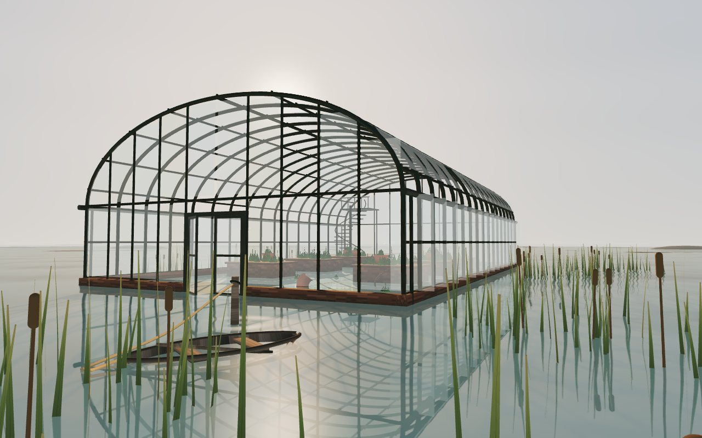

The Glass Tide
Qwen 4 Max · 52 KB · 17 Nov 2026
The Glass Tide, delivered in one prompt with 10 follow-ups — the session iterated on the first pass.
Runs sandboxed in this page — click inside to interact.
The Glass Tide, delivered in one prompt with 10 follow-ups — the session iterated on the first pass.

Session captured from DeepSeek Harness.
57e3c117-2a9b-42e7-aed1-a4baf925a3c0, 10 follow-ups.# 001 — THE GLASS TIDE Create THE GLASS TIDE: a photorealistic, real-time Three.js scene. An abandoned Victorian palm house stands in a salt marsh as a shallow tide slips through its broken doors. Make the opening frame feel like a carefully photographed place or physical object, with a clear focal point and convincing scale. ## DELIVERABLE & ASSET RULES Deliver one HTML document containing the scene's JavaScript, shaders, CSS and UI inline. As in this single-file demo format, the only permitted external dependency is Three.js 0.160.0 and its matching official addons, using an import map with `three` mapped to `https://cdn.jsdelivr.net/npm/three@0.160.0/build/three.module.js` and `three/addons/` to `https://cdn.jsdelivr.net/npm/three@0.160.0/examples/jsm/`. No other network requests, build tools or companion files. Generate every mesh, texture, environment map, particle and sound in code. Canvas textures and procedural shaders are allowed; downloaded images, HDRIs, models, fonts, samples and embedded copies of external art assets are forbidden. Use system fonts. Start the visuals automatically when the file opens. ## FRAMING & COMPOSITION Frame the iron-and-glass structure across two-thirds of the view, with foreground reeds, a flooded tiled aisle and distant silver estuary. Keep the far horizon low; the roof silhouette must remain legible through the mist. ## REQUIRED SCENE - Build curved roof ribs, bolted joints, individual glazing panels, missing panes, gutters and a partly open double door; give the frame real thickness. - Inside, place raised brick planters, ferns, a fallen palm frond and a spiral maintenance stair. Water connects continuously through the doorway to the marsh. - Include submerged floor mosaics, tangled roots and a little rowboat tied outside; its rope must meet both boat and mooring ring. ## MATERIALS & LIGHT Use oxidised iron, mineral-stained glass, damp terracotta and shallow water with depth-dependent absorption. Low amber sunlight should stripe the aisle through the roof ribs; reflections must include the structure. Build detail at structural, surface and fine scales; use plausible roughness, thickness, contact shadows and reflected light. Keep highlights controlled and shadow detail readable. No voxel styling, faceted low-poly substitutes or uniformly glossy materials. ## MOTION & HERO MOMENT - Run a gentle 48-second tide oscillation with ripples bending around the planters, swaying reeds and a boat responding to the same water height. - The hero moment is a breeze opening the loose door while its reflection breaks into moving bands and reflected sunlight climbs the stair. ## CAMERA & INTERACTION Follow a slow exterior-to-doorway arc at human height without entering the glazing; preserve a view of the flooded aisle. Begin in cinematic mode. Allow damped drag-to-orbit and wheel/pinch zoom within safe bounds; manual input takes control. Small CINEMATIC, RESET VIEW and PAUSE buttons restore the shot or freeze scene time. Keep camera movement available while paused. Use a restrained lower-left title and lower-right controls; fade the overlay after inactivity and restore it on pointer movement or keyboard focus. ## PROCEDURAL SOUND Create soft water laps, sparse glass ticks and a distant wind tone. Synthesize it with Web Audio, initially muted; a SOUND button enables it after a user gesture. Keep levels comfortable, provide mute, and never gate the visuals behind audio permission. ## QUALITY & PERFORMANCE The doorway must read as one connected volume of water, and the glazing must remain transparent enough to reveal the interior. Preserve genuine spatial depth during manual orbit; do not flatten the scene into a camera-facing illustration. Use deterministic generation with seed 1337 and frame-rate-independent motion; use fixed steps for simulated constraints. Target a steady 30–60 fps at 1080p, cap device pixel ratio, instance repeated details, pool particles and keep simulation counts bounded. Generate static maps once. Budget reflection, transmission and volumetric passes; reduce their resolution before sacrificing the hero geometry. Fill the viewport and handle resize. Avoid clipping, z-fighting, visible recycling and abrupt camera resets. If browser tools are available, inspect the rendered opening, hero moment, controls and any loop boundary and fix console errors; do not claim testing you could not perform. ## OUTPUT Return only the finished HTML in one code block, with no prose, placeholders or unfinished features.